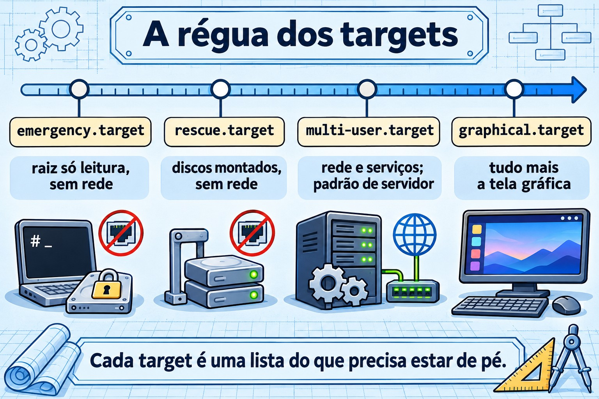
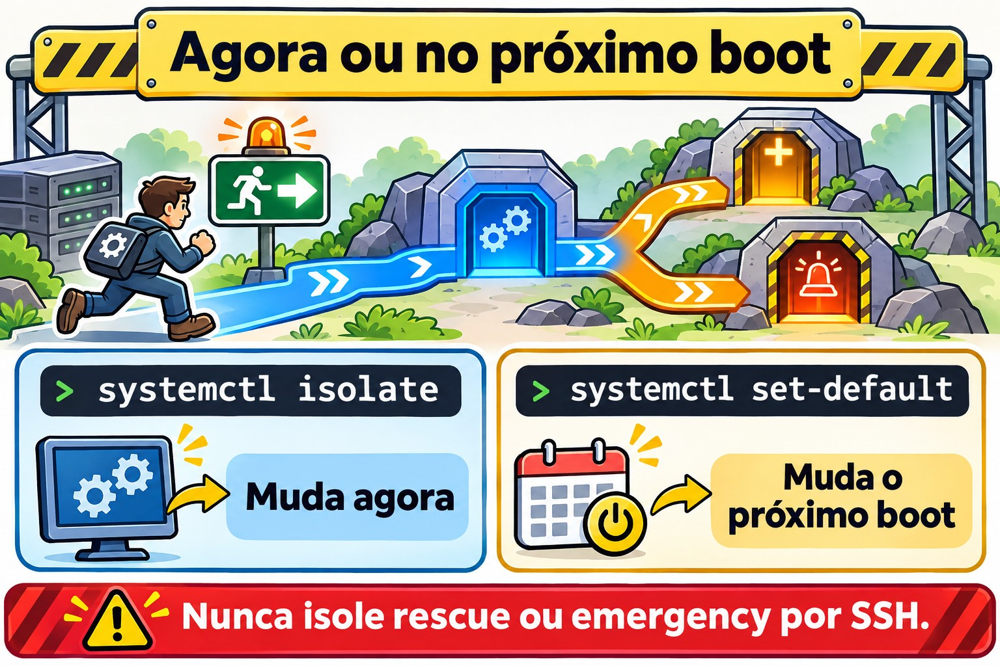

Aula 4.3 · Targets, desligar e reiniciar
Na 4.2 você ligou e desligou serviços um por um. Hoje você troca a máquina inteira de modo: do modo normal para o modo de manutenção, e de volta. Também aprende a desligar e reiniciar um servidor sem pegar ninguém de surpresa.
Núcleo desta aula: um target é um modo de operação da máquina, um pacote de units.
get-defaulteset-defaultmexem no modo do próximo boot;isolatemuda o modo agora.rescueeemergencysão os modos de manutenção, e os dois pedem a senha de root. Para desligar ou reiniciar:systemctl poweroffesystemctl reboot, oushutdownquando você quer horário e aviso.
| Ficha | |
|---|---|
| Módulo | M4 · Boot e systemd, aula 3 de 4 |
| Quando | Semana 9 |
| Tempo | cerca de 1h30 |
| Pré-requisito | Aulas 4.1 e 4.2 |
| Lab | rocky-lab (201) e debian-lab (202), com o console do Proxmox aberto |
| Snapshots | m4a3-inicio e m4a3-fim |
1 Aquecimento
Responda de cabeça, sem consultar. As respostas estão no Gabarito, no fim da aula.
- Você roda
sudo systemctl isolate rescue.targetnuma sessão SSH. O que acontece com a sua sessão? - Qual a diferença entre
systemctl set-defaultesystemctl isolate? - O que faz
shutdown -r +10, e como você cancela?
2 Por que importa
| Situação real | O que resolve |
|---|---|
Você mexeu no /etc/fstab, reiniciou e o servidor não sobe | Entrar em emergency.target pelo console |
| Manutenção que exige a máquina sem serviços rodando e sem usuários | rescue.target |
| Reiniciar o servidor de um cliente às 23h, avisando quem estiver logado | shutdown -r 23:00 "mensagem" |
| Alguém instalou interface gráfica num servidor e ele passou a subir em modo gráfico | systemctl set-default multi-user.target |
3 Modelo mental
Um target é uma lista do que precisa estar ligado para a máquina estar num certo modo. Pense numa régua, da menos para a mais coisa ligada:
emergency → rescue → multi-user → graphical
raiz só discos do rede, sshd, multi-user
leitura, fstab, todos os + tela
shell root shell root serviços gráficaO multi-user.target é o servidor normal: rede, sshd e os seus serviços, sem tela gráfica. É o padrão de qualquer servidor. O graphical.target é tudo isso mais a tela gráfica. Os dois da esquerda são modos de manutenção: não têm rede nem sshd, só um shell de root no console.
Você tem duas alavancas, iguais às da 4.2:
| Alavanca | Muda quando | Comando | Parente na 4.2 |
|---|---|---|---|
| Modo do próximo boot | No próximo boot | systemctl set-default | enable |
| Modo de agora | Agora, sem reiniciar | systemctl isolate | start |
Os runlevels antigos (0 a 6) que você viu na tabela da 4.1 são só nomes velhos para estes targets. O runlevel 3 é o multi-user.target, e o runlevel 1 é o rescue.target.


4 O essencial
Ver e mudar o target padrão
systemctl get-default
sudo systemctl set-default multi-user.target
ls -l /etc/systemd/system/default.targetO set-default não faz mágica: ele só troca um link simbólico, default.target, para apontar para o target que você escolheu. No boot, o systemd procura o default.target e segue o link.
Ver o que um target puxa
systemctl list-units --type=target
systemctl list-dependencies multi-user.target | head -20Mudar agora: isolate
sudo systemctl isolate multi-user.targetO isolate liga o que o novo target pede e para tudo o que não faz parte dele. Por isso ele só aceita targets marcados com AllowIsolate=yes, como multi-user, graphical, rescue, emergency, reboot e poweroff. Em outros targets ele recusa com Operation refused, unit may not be isolated.
Atalhos que você vai usar mais do que o isolate:
| Atalho | Equivale a |
|---|---|
systemctl rescue | isolate rescue.target |
systemctl emergency | isolate emergency.target |
systemctl default | isolate default.target (volta ao modo padrão) |
rescue × emergency
| rescue.target | emergency.target | |
|---|---|---|
Raiz (/), num boot direto | montada para leitura e escrita | montada só leitura |
| Outros discos do fstab | montados | não montados |
Rede e sshd | não | não |
| Pede senha de root | sim | sim |
| Quando usar | manutenção com o sistema quase de pé | fstab quebrado, ou quando o rescue não sobe |
| Nome antigo | runlevel 1, single | sem equivalente |
A linha da senha é a que pega gente experiente. Os dois modos chamam o sulogin, que exige a senha de root: a sua senha de sudo não serve. Se a conta root estiver bloqueada, o modo de manutenção não abre e aparece Cannot open access to console, the root account is locked. Confira antes de precisar:
sudo passwd -S rootSe a segunda coluna for L ou LK, a conta está bloqueada (locked). P ou PS quer dizer que tem senha. Esqueceu a senha de root? Isso é a 4.4.
Entrar num target só neste boot
No GRUB, você acrescenta systemd.unit=rescue.target ou systemd.unit=emergency.target na linha do kernel. Vale só para aquele boot. Os nomes antigos 1, s e single também levam ao rescue. Você faz isso na prática na 4.4; por enquanto, saiba que existe.
Desligar e reiniciar
sudo systemctl poweroff # desliga
sudo systemctl reboot # reinicia
sudo systemctl halt # para a CPU, mas pode não cortar a energia
sudo shutdown -h now # desliga agora
sudo shutdown -r +10 "Reinício para atualização" # daqui a 10 min, com aviso
sudo shutdown -r 23:00 # num horário
sudo shutdown -c # cancela o agendado
wall "Servidor reinicia às 23h" # mensagem para todos os terminaisTrês detalhes do shutdown:
- Sem horário, ele espera 1 minuto, ou seja, não é imediato. Para ser imediato, use
now. - Quando faltam 5 minutos, ele cria o arquivo
/run/nologin, e a partir daí usuários comuns não conseguem mais entrar. - Para ver o que está agendado, use
shutdown --show. Se a sua versão do systemd não tiver essa opção, leia/run/systemd/shutdown/scheduled.
Os comandos antigos ainda funcionam e aparecem em documentação antiga: init 0 desliga, init 6 reinicia, telinit 1 vai para o rescue, e runlevel mostra o anterior e o atual (por exemplo, N 3).
Para saber quando a máquina reiniciou: who -b, last -x reboot shutdown | head e journalctl --list-boots.
Rocky × Debian
| Rocky 9 | Debian 12 | |
|---|---|---|
| Target padrão de servidor sem GUI | multi-user.target | multi-user.target |
| Conta root após a instalação | bloqueada, se você não deu senha de root no instalador | bloqueada, se você deixou a senha de root em branco |
| Comandos de target e shutdown | iguais (systemd 252) | iguais (systemd 252) |
As duas usam a mesma versão do systemd, então os comandos são os mesmos. Na prática, a diferença está na conta root, e isso decide se você consegue entrar em modo de manutenção.
5 Lab guiado
Passo 0 · Snapshot e console
No shell do nó Proxmox:
qm snapshot 201 m4a3-inicio
qm snapshot 202 m4a3-inicioAbra o console (noVNC) das duas VMs na interface do Proxmox e deixe aberto. Nesta aula a rede vai cair de propósito, e o console é o seu único caminho de volta. Em cada VM:
mkdir -p ~/lab43 && cd ~/lab43Passo 1 · Onde a máquina está agora
Nas duas VMs:
systemctl get-default
ls -l /etc/systemd/system/default.target
systemctl list-units --type=target --state=active
sudo runlevelAnote as respostas em ~/lab43/notas.txt. O esperado: multi-user.target, um link apontando para /usr/lib/systemd/system/multi-user.target e N 3 no runlevel.
Passo 2 · Conferir a conta root
sudo passwd -S rootSe aparecer L ou LK, defina uma senha de root só no lab, digitando você mesmo, e guarde-a no seu gerenciador de senhas:
sudo passwd rootSem isso, os passos 3 e 6 travam na mensagem the root account is locked.
Decida 1
Você está na rocky-lab por SSH, não pelo console, e vai rodar sudo systemctl isolate rescue.target. O que acontece?
- A) Nada muda, e a sessão SSH continua normal.
- B) A sessão SSH cai ou congela, e o console fica pedindo a senha de root.
- C) A máquina reinicia e volta em modo rescue.
Marque uma opção antes de rodar. Depois rode e veja o que acontece.
| Se você marcou | Resultado | Por quê |
|---|---|---|
| A | Errou | O isolate para tudo o que não faz parte do rescue, e isso inclui o sshd e a rede |
| B | Acertou | Sem sshd e sem rede, a sua sessão perde o caminho. O rescue abre um shell de root só no console |
| C | Errou | O isolate não reinicia: ele troca de modo com a máquina ligada |
Para fixar: nunca isole rescue ou emergency por SSH num servidor remoto, a menos que você tenha console fora de banda (iLO, IPMI ou o console do Proxmox). No lab você tem, por isso pode testar.
Passo 3 · Dentro do rescue e do emergency
No console da rocky-lab, digite a senha de root e confira:
systemctl is-system-running # esperado: maintenance
systemctl list-units --type=service --state=running
ip -br addr
findmnt /Repare como sobra pouca coisa rodando. Para sair, volte ao modo padrão e entre de novo por SSH:
systemctl defaultAgora a debian-lab. Direto no console, entre com o seu usuário e rode:
sudo systemctl emergencyDigite a senha de root e compare com o rescue:
systemctl list-units --state=active | wc -l
findmnt /Repare numa coisa: como você entrou com a máquina já ligada, a raiz continua como estava, montada para leitura e escrita. A raiz só leitura aparece quando você inicia a máquina direto no emergency, pelo GRUB, e isso fica para a 4.4. Saia com systemctl default.
Decida 2
Na debian-lab, por SSH, agende um reinício e veja a agenda:
sudo shutdown -r +6 "Teste da aula 4.3"
sudo shutdown --show || cat /run/systemd/shutdown/scheduledNão feche esta sessão. Espere uns 2 minutos, até faltarem menos de 5, e abra uma segunda sessão SSH com o seu usuário. Ela entra?
- A) Entra normalmente.
- B) É recusada, com uma mensagem de que o sistema está sendo desligado.
- C) Entra, mas cai na mesma hora.
| Se você marcou | Resultado | Por quê |
|---|---|---|
| A | Errou | Faltando 5 minutos, o shutdown cria /run/nologin |
| B | Acertou | Com esse arquivo presente, o pam_nologin recusa o login de qualquer usuário que não seja root |
| C | Errou | A recusa acontece antes de abrir a sessão |
Na primeira sessão, que continua aberta, cancele e confira:
sudo shutdown -c
ls -l /run/nologinSe o arquivo não sumiu, apague-o com sudo rm /run/nologin.
Para fixar: é por isso que você mantém uma sessão aberta depois de agendar. Se precisar cancelar faltando menos de 5 minutos, você não consegue mais entrar com o seu usuário. Agendar com aviso é shutdown; reiniciar agora é systemctl reboot.
Passo 4 · Mudar o target padrão
Na rocky-lab, que não tem interface gráfica instalada:
sudo systemctl set-default graphical.target
ls -l /etc/systemd/system/default.target
sudo systemctl rebootEntre de novo por SSH e confira:
systemctl get-default
systemctl is-system-runningA máquina sobe normalmente. O graphical.target exige o multi-user e só quer o gerenciador de tela, e um Wants= que não existe é ignorado (isso é da 4.2). Funciona, mas confunde quem vier depois. Volte ao padrão de servidor:
sudo systemctl set-default multi-user.targetPasso 5 · Quem reiniciou e quando
Nas duas VMs:
who -b
last -x reboot shutdown | head -6
journalctl --list-boots | tail -5Você deve ver os reinícios desta aula. Um reboot sem um shutdown logo antes indica que a máquina caiu, em vez de ser desligada direito.
6 Quebre e conserte
Na rocky-lab, por SSH:


sudo systemctl set-default rescue.target
sudo systemctl rebootO SSH não volta. Investigue só pelo console: o que aparece na tela? Qual modo está ativo? Por que a rede não subiu?
Depois de investigar, conserte e confira com mais um reinício:
systemctl get-default
systemctl set-default multi-user.target
systemctl defaultA lição: quando um servidor "não volta na rede" depois de uma mudança, a primeira pergunta é em que modo ele subiu?. O console responde em segundos.
7 Armadilhas
isolate rescuepor SSH num servidor remoto. Você fica de fora, e só entra de novo com console fora de banda ou com alguém na frente da máquina.- Root bloqueado. O rescue e o emergency não abrem. Confira com
passwd -S rootantes do dia em que precisar. haltem vez depoweroff. Dependendo do hardware, a máquina para mas continua ligada na energia.shutdownsem horário. Ele espera 1 minuto: não é imediato.- Agendou e esqueceu. O servidor reinicia no horário marcado, em pleno expediente. Confira com
shutdown --showe cancele comshutdown -c. isolatenum target qualquer. SemAllowIsolate=yes, ele recusa.graphical.targetem servidor. Não quebra nada, mas o padrão de servidor é omulti-user.target.
8 Quiz
- Qual comando mostra o target padrão?
- Você quer que, a partir do próximo boot, a máquina suba em
multi-user.target. Qual é o comando? - Num boot direto, qual a diferença entre rescue e emergency quanto à raiz e aos discos do fstab?
- Você rodou
shutdown -r 22:30 "Atualização". O que muda para os usuários às 22:25? - Quais são os equivalentes no systemd de
init 6e detelinit 1? - You are logged in over SSH to a remote server with no out-of-band console. Why is
systemctl isolate emergency.targeta bad idea?
9 Cola
Para saber de cor
| Comando | Faz |
|---|---|
systemctl get-default | Mostra o modo do próximo boot |
systemctl set-default multi-user.target | Muda o modo do próximo boot |
systemctl isolate X.target | Muda o modo agora |
systemctl rescue / emergency / default | Atalhos de modo |
systemctl poweroff / reboot | Desliga ou reinicia agora |
shutdown -r +10 "msg" / shutdown -c | Agenda com aviso / cancela |
passwd -S root | Mostra se a conta root está bloqueada |
Para consultar
systemctl list-dependencies X.target, AllowIsolate=, /run/nologin, shutdown --show ou /run/systemd/shutdown/scheduled, wall, runlevel, init, telinit, who -b, last -x.
Flashcards
| Pergunta | Resposta |
|---|---|
| Qual o modo normal de servidor? | multi-user.target |
set-default está para isolate assim como enable está para...? | start |
O que é o default.target por dentro? | Um link simbólico |
| Qual senha o rescue pede? | A de root |
O que acontece faltando 5 minutos para um shutdown? | É criado o /run/nologin, e usuários comuns não entram mais |
10 Checklist e fechamento
- [ ] Sei ver e mudar o target padrão
- [ ] Entrei em rescue e em emergency pelo console e voltei com
systemctl default - [ ] Sei por que não se isola rescue por SSH
- [ ] Agendei, conferi e cancelei um
shutdown - [ ] Consertei uma máquina que subiu em rescue
- [ ] As duas VMs têm senha de root conhecida
Último exercício, sem olhar a aula: na debian-lab, agende um reinício para daqui a 15 minutos com uma mensagem, mostre a agenda, cancele e confirme que não existe /run/nologin. Na rocky-lab, confirme que o padrão é multi-user.target.
Reboot e conferência: reinicie as duas VMs e confira:
systemctl get-default # multi-user.target
systemctl is-system-running # running
ls ~/lab43Snapshot de fim, no nó Proxmox:
qm snapshot 201 m4a3-fim
qm snapshot 202 m4a3-fim11 Na vida real
Missão, só leitura. Num servidor real que você administra, rode apenas estes comandos, que não mudam nada:
systemctl get-default
who -b
last -x reboot shutdown | head -6
journalctl --list-boots | tail -5
sudo passwd -S rootResponda: quando foi o último reinício? Foi um desligamento limpo ou uma queda? Se esse servidor não subisse amanhã, você conseguiria entrar em rescue? Tem senha de root? Tem console fora de banda?
Diário: escreva três linhas sobre o que você aprendeu hoje e uma dúvida que ficou.
Amanhã, sem olhar:
- Diga de cabeça os quatro targets da régua, em ordem.
- Escreva o comando que agenda um reinício para as 23h com aviso.
- Explique em uma frase por que o rescue pode não abrir.
12 Aprofundar quando quiser
systemctl list-dependencies --reverse: quem puxa um target.- Criar o seu próprio target, por exemplo um
manutencao.targetcomAllowIsolate=yes. systemd-inhibit: programas que seguram o desligamento.- O botão de energia:
HandlePowerKey=em/etc/systemd/logind.conf. systemctl soft-reboot, que reinicia só o espaço do usuário. É do systemd 254 em diante, então não existe no Rocky 9 nem no Debian 12.
No DeepTutor: !explica isolate e set-default, !feynman rescue e emergency, !quiz targets e shutdown.
Gabarito comentado
Aquecimento
- A sessão cai ou congela. O rescue para o
sshde a rede, e só deixa um shell de root no console. - O
set-defaultmuda o modo do próximo boot, trocando o linkdefault.target. Oisolatemuda o modo agora, sem reiniciar. - Agenda um reinício para daqui a 10 minutos e avisa os usuários logados. Cancela-se com
shutdown -c.
Quiz
systemctl get-default.sudo systemctl set-default multi-user.target. Lembre que isso não muda nada agora: para mudar já, useisolate.- No rescue, a raiz é montada para leitura e escrita e os discos do fstab são montados. No emergency, a raiz fica só leitura e nada do fstab é montado. Por isso o emergency é a saída quando o fstab está quebrado.
- Faltam 5 minutos, então o
/run/nologiné criado: usuários comuns não conseguem mais entrar. Quem já está logado continua e recebe os avisos. init 6ésystemctl reboot.telinit 1ésystemctl isolate rescue.target, ousystemctl rescue.- Emergency mode stops networking and sshd, so the SSH session dies and nothing is left to log back in through. Without a console, someone has to go to the machine physically.